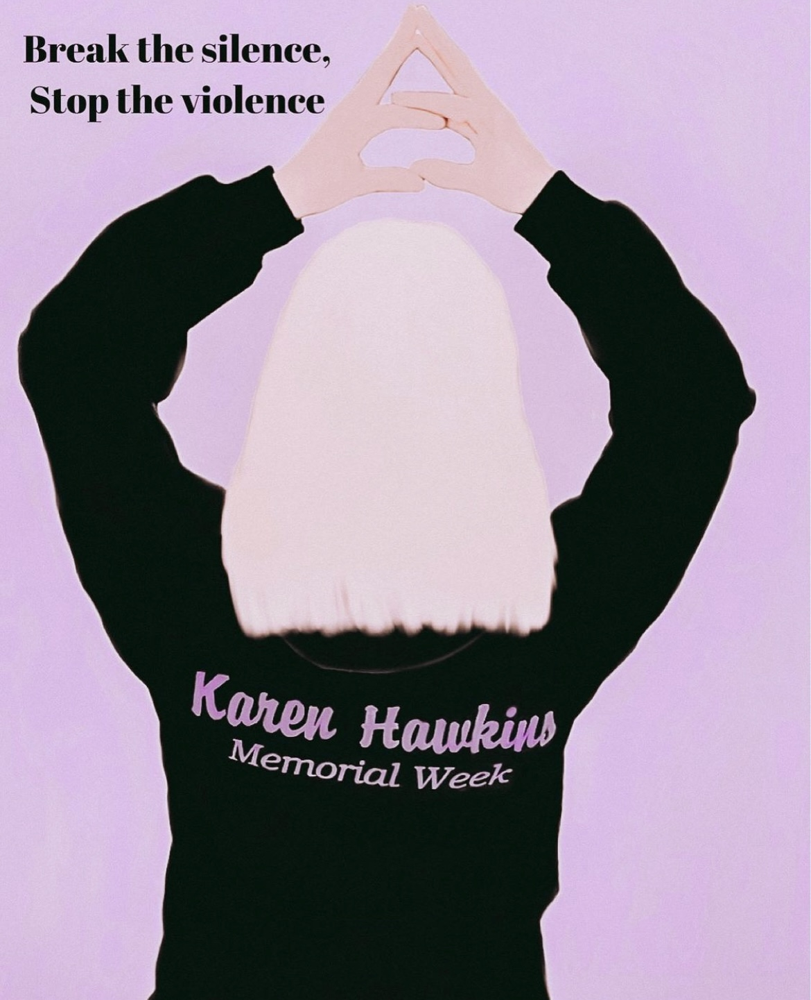

Case Break Down
Karen Hawkins was a victim of sexual asault and murder. Her case starts at a local bar in Maryville, MO. She was out with two friends when things took a turn. Dennis Jones, a friend that was with her that night raped and killed Karen.
Dennis Jones confessed to the murder of Karen Hawkins and showed law enforcement all evidecne to prove her commited the murder.
